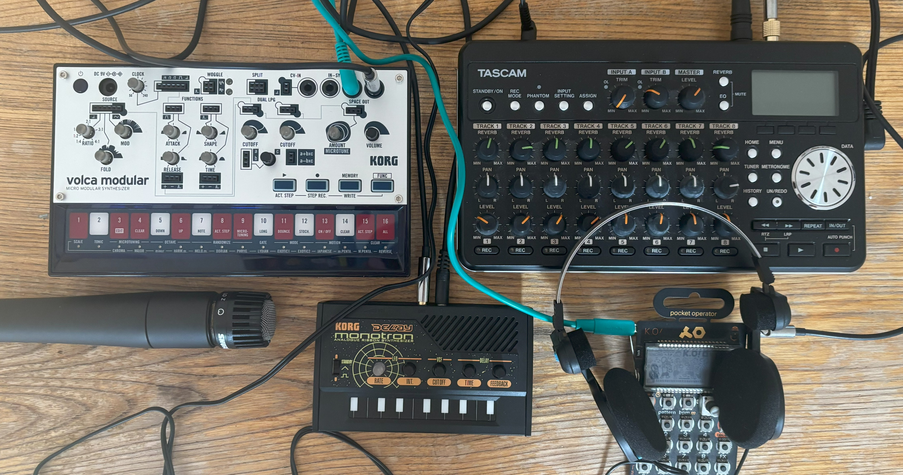
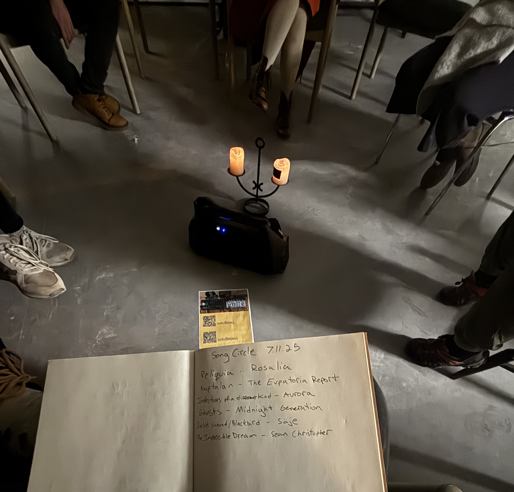
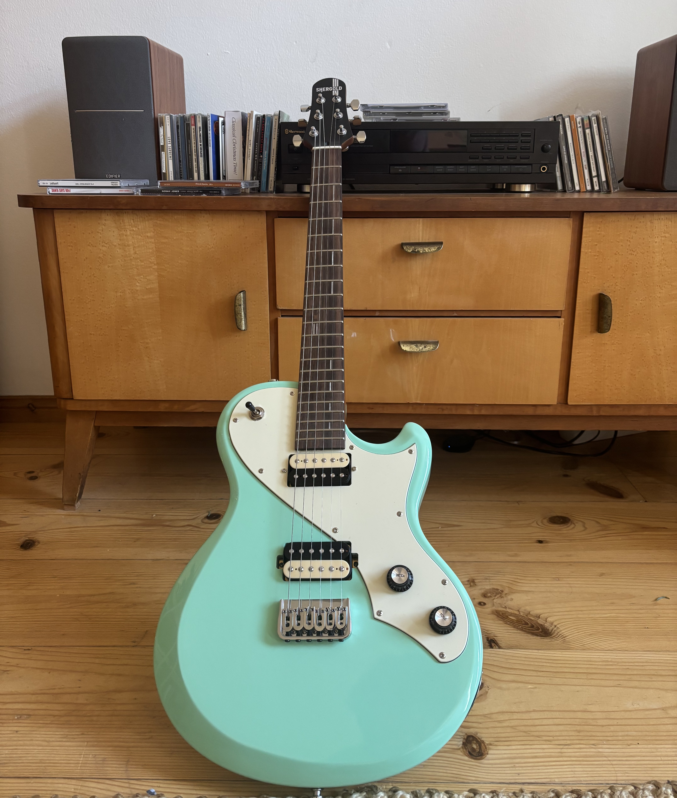

Jordan Elias is a board certified music therapist (MT-BC) working in Berlin and online, helping manage anxiety, burnout, and depression through creative, evidence-based approaches in a queer-affirming and neurodiversity-affirming space.
Learn more about music therapy.
Services
Individual Sessions
Weekly or bi-weekly therapy sessions combining counseling, and structured creative projects to improve emotional wellbeing and self-expression.
Rates: €75 individual, €42 students. Sliding scale available; I will work with you to ensure cost is not a barrier to getting care and support.
Contact me to book a free 30-minute consultation.

Community Partnerships
Ongoing group sessions that promote emotional exploration, song sharing, and creative connection. Build support and confidence in a safe, inclusive environment.
Contact me if you'd like to have a music therapy group at your organization and check out upcoming events here.

Lessons
Guitar lessons and small group ensembles tailored for neurodivergent learners, focusing on creativity, skill-building, and emotional expression.
Contact me to learn more.
Frequently Asked Questions
-
Music therapy is an evidence-based clinical practice in which a board-certified therapist uses music-making, listening, and creative exploration to support emotional, cognitive, and psychological wellbeing. It is distinct from music lessons or music as recreation — the goal is therapeutic, not performative. Sessions are led by a credentialed professional and tailored to each individual's needs and history. Learn more about music therapy here.
-
Music therapy uses music as the primary medium for exploration and expression, which can be especially valuable for people who find it difficult to access or articulate emotions through words alone. While talk therapy centers on verbal dialogue, music therapy might involve songwriting, improvisation, listening, or playing an instrument as a way into deeper therapeutic work. Many clients find it a more accessible and less intimidating entry point than traditional psychotherapy.
-
Music lessons focus on developing technical skills and musicianship. Music therapy focuses on your wellbeing, not your musical ability. In music therapy with Jordan Elias, there are no right or wrong notes — the music is a tool for self-expression, emotional regulation, and insight, not a performance to be evaluated.
-
No musical experience is needed whatsoever. Many clients come with little to no background in music. Sessions are shaped entirely around you — your comfort, your interests, and your goals. The music is a means, not an end.
-
Yes. All individual music therapy sessions can be conducted online, making them accessible from anywhere in the world. Online sessions are held via a secure video platform and are equally effective as in-person work for most clients. Learn more about how telehealth music therapy works here. Jordan Elias works with clients across Europe and internationally.
-
Sessions are available in English.
-
Music therapy is not currently reimbursed by statutory health insurance (gesetzliche Krankenversicherung) in Germany in most contexts. Some private health insurance plans may cover sessions — it is worth checking directly with your provider. Jordan Elias can provide receipts and documentation upon request.
-
You can book a free 30-minute consultation with Jordan Elias directly via the contact page or through Calendly. This initial call is a chance to ask questions, talk about what you're looking for, and see whether music therapy feels like a good fit — with no obligation to continue.